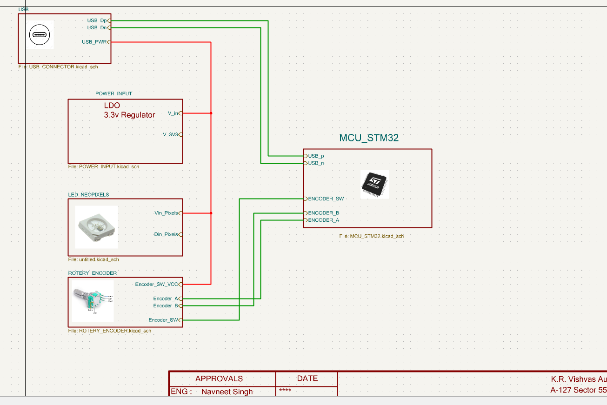
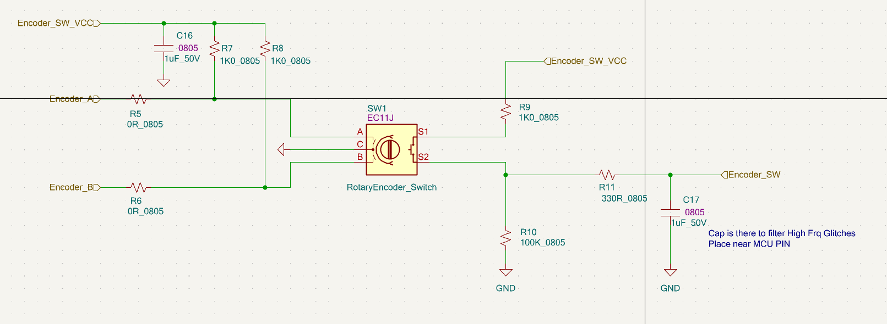
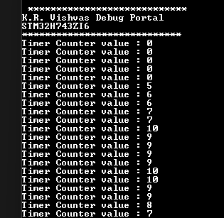

This page will document through the intricacies of configuring the Timer in Encoder Capture Mode.

Image1-Encoder Setup with STM32H743ZI2
Project Details / Background
The system's interconnection is illustrated in the block diagram below. A USB Type-C connector serves a dual role,
providing both communication and input power to the encoder PCB board. To facilitate communication with a PC, the STM32 USB middleware is utilized,
configuring the MCU as a USB CDC (Communication Device Class) device. This setup enables seamless data exchange between the MCU and the PC.
Furthermore, the encoder is seamlessly interfaced with the MCU using the timer capture module for precise data input. To enhance user interaction and control, the built-in encoder switch is leveraged as a user interface element, offering intuitive and convenient operation. This interconnected system synergizes the power of STM32 microcontrollers with USB communication, precise encoder inputs, and a user-friendly interface to create a versatile and capable solution.
Furthermore, the encoder is seamlessly interfaced with the MCU using the timer capture module for precise data input. To enhance user interaction and control, the built-in encoder switch is leveraged as a user interface element, offering intuitive and convenient operation. This interconnected system synergizes the power of STM32 microcontrollers with USB communication, precise encoder inputs, and a user-friendly interface to create a versatile and capable solution.

Image2- SYSTEM BLOCK DIAGRAM
Encoder Circuit
This circuit diagram illustrates the seamless integration of the encoder with the MCU. Two signal lines, denoted as 'A' and 'B,'
carry the encoder's signals, allowing the MCU to precisely capture the rotational data. Additionally, the built-in switch on the encoder is connected to the MCU,
providing the capability to detect and process various user interactions, such as single taps, double taps, and long holds on the switch.
The incremental encoder operates by generating two output channels, 'A' and 'B,' which produce quadrature signals. As the encoder shaft rotates, these signals are phased 90 degrees apart, and the MCU detects the edges of these signals. By tracking the order and timing of the signal edges, the MCU can accurately determine the direction and speed of rotation.
For user interface functionality, the MCU's firmware is designed to recognize specific patterns of switch activations. Single taps, double taps, and long holds are differentiated, allowing the MCU to respond to user input effectively. This combined setup offers precise rotational data capture and a user-friendly interface, making it a versatile and intelligent solution for a wide range of applications
The incremental encoder operates by generating two output channels, 'A' and 'B,' which produce quadrature signals. As the encoder shaft rotates, these signals are phased 90 degrees apart, and the MCU detects the edges of these signals. By tracking the order and timing of the signal edges, the MCU can accurately determine the direction and speed of rotation.
For user interface functionality, the MCU's firmware is designed to recognize specific patterns of switch activations. Single taps, double taps, and long holds are differentiated, allowing the MCU to respond to user input effectively. This combined setup offers precise rotational data capture and a user-friendly interface, making it a versatile and intelligent solution for a wide range of applications

Image3-ENCODER CIRCUIT
Settin up the Timer 2 in Encoder mode, or more specifically input capture mode
// This can be Generated and edited in STM32 Cude IDE GUI
static void MX_TIM2_Init(void)
{
/* USER CODE BEGIN TIM2_Init 0 */
/* USER CODE END TIM2_Init 0 */
TIM_Encoder_InitTypeDef sConfig = {0};
TIM_MasterConfigTypeDef sMasterConfig = {0};
/* USER CODE BEGIN TIM2_Init 1 */
/* USER CODE END TIM2_Init 1 */
htim2.Instance = TIM2;
htim2.Init.Prescaler = 1;
htim2.Init.CounterMode = TIM_COUNTERMODE_UP;
htim2.Init.Period = 255;
htim2.Init.ClockDivision = TIM_CLOCKDIVISION_DIV1;
htim2.Init.AutoReloadPreload = TIM_AUTORELOAD_PRELOAD_ENABLE;
sConfig.EncoderMode = TIM_ENCODERMODE_TI12;
sConfig.IC1Polarity = TIM_ICPOLARITY_RISING;
sConfig.IC1Selection = TIM_ICSELECTION_DIRECTTI;
sConfig.IC1Prescaler = TIM_ICPSC_DIV1;
sConfig.IC1Filter = 15;
sConfig.IC2Polarity = TIM_ICPOLARITY_RISING;
sConfig.IC2Selection = TIM_ICSELECTION_DIRECTTI;
sConfig.IC2Prescaler = TIM_ICPSC_DIV1;
sConfig.IC2Filter = 15;
if (HAL_TIM_Encoder_Init(&htim2, &sConfig) != HAL_OK)
{
Error_Handler();
}
sMasterConfig.MasterOutputTrigger = TIM_TRGO_RESET;
sMasterConfig.MasterSlaveMode = TIM_MASTERSLAVEMODE_DISABLE;
if (HAL_TIMEx_MasterConfigSynchronization(&htim2, &sMasterConfig) != HAL_OK)
{
Error_Handler();
}
}
Image Gallery

MCU Reporting Encoder Values on USB Terminal